引言
完成第一部分的数据系统基础学习后，就开始进入分布式数据系统的世界了。前面学习的内容主要是针对单节点的情况；然而，在现实中，我们需要考虑到系统的扩展性、容错性以及延迟性等，这就引入了分布式系统。分布式系统中通常会有很多个节点，复杂度自然也上来了。这个部分将主要学习数据系统的复制、分区、事务、一致性共识算法、以及分布式系统设计时的一些挑战等，这些知识都比较硬核，也非常有趣。所以，「上车，走吧~」
本篇笔记重点是关于数据系统的复制和分区，可以了解下常规的主从复制原理、多主复制的应用场景，另外还介绍了无主复制的系统（如亚马逊 Dynamo 系统）。最后就是关于数据分区的介绍，可以了解下常见的分区策略，动态平衡策略等。
为什么需要分布式系统？
共享架构
针对共享架构，如果负载增加，最常见的扩展方式就是采买更强大的 CPU、添加更多的内存等。这种被称为垂直扩展，但是这种方式并不一定奏效，天花板是看得见的。并且扩展的成本非线性，而应对负载的能力却不一定能线性提高。
无共享架构
在无共享架构中，每个节点使用独立的 CPU、内存和磁盘，节点之间的通信采用以太网。该架构无需特殊的硬件支持，性价比高。扩展性好（水平扩展），并且有强大的容错能力和负载均衡能力。不过这种架构最大的问题是会带来更大的复杂性，甚至会限制实际可使用的数据模型。
数据复制
主节点和从节点
- 每个保存了数据库完整数据集的节点叫作副本
- 主从复制方案：
- 指定某个副本为主副本（主节点）。写入会发给主节点
- 主节点在将新数据存储后，将更改作为复制的日志或者更改流的方式发给从节点。从节点获取更改日志，并应用到本地，这里必须要保持和主副本相同的写入顺序
- 客户端读取时，可读取从副本的数据
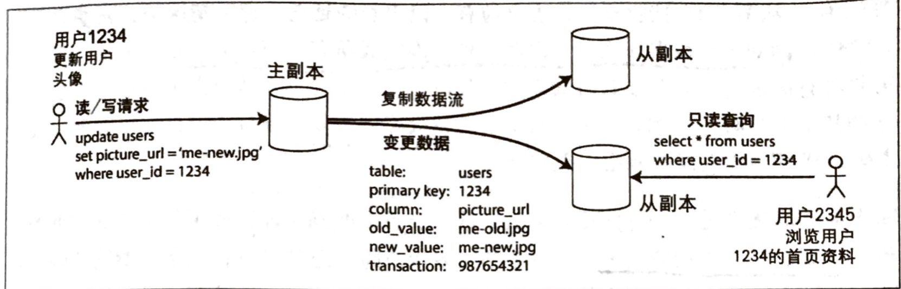
同步复制 v.s. 异步复制
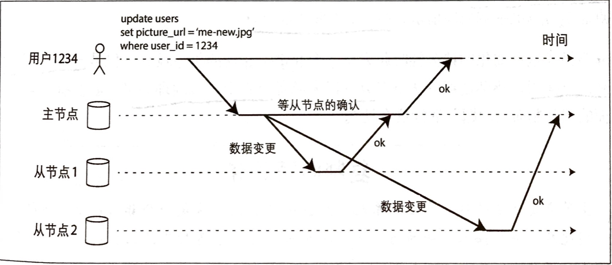
- 对于关系数据库，两种复制方式通常是可配置的；而其他系统可能只可指定其中一种方式。
- 同步复制：
- 优点：一旦向用户确认写入请求，则主从数据一致，并都处于最新版本。主库宕机，也可以放心从从库读取。
- 缺点：如果从节点无法完成确认（如网络拥塞、故障等），写入会失败。主节点会阻塞后续写请求，降低系统吞吐量和可靠性。
- 半同步：实践中，如果开启了同步复制模式，通常是其中的某个从节（可根据情况选择其他从节点提升为同步模式）点为同步复制，而其他为异步复制模式。
- 全异步：
- 优点：系统的吞吐性能很好
- 缺点：数据的持久化无法得到保证，可能存在数据丢失的情况
配置新的从节点
什么时候需要？
- 提高负载能力
- 提供容错能力
- 替换失败的副本
要想做到不停机完成新节点添加，逻辑上主要操作如下：
- 生成快照：在某刻对主节点的数据副本产生一个一致性快照（避免长时间锁库）
- 快照发送：快照发送到新的从节点（这样大部分的历史数据就有了）
- 变更日志：从节点上线连接到主节点，请求快照点之后发生的所有数据更改日志（增量）
- 追赶：获得日志后，从节点应用快照后的数据变更。继续处理主节点上新数据变化。并重复步骤 1~4
节点失效怎么办？
- 从节点失效：追赶式恢复。从节点可根据副本的复制日志得知故障前最后一笔事务，然后向主节点请求该事务之后中断期间内的所有数据变更，并应用变更，完成追赶。
主节点失效：节点切换：
- 故障切换可手动，可自动。
- 自动切换常规步骤：
- 确定主节点失效。多采用基于超时的机制，可以周期性地发送心跳包。
- 选举新的主节点。涉及到共识的算法，原则是要保证新的主节点与原来的数据差异最小，尽可能减少数据丢失风险。
- 重新配置系统，生效主节点。客户端需要将写请求发送到新的主节点，对于原主节点恢复后需要确保其被降级为从节点，认可新的主节点。
需要思考的问题：
- 如果采用异步复制，新的主节点选举后，原主节点也上线，新的主节点可能会收到写冲突。简单粗暴的方式就是，抛弃原主节点未完成复制的写请求，违背数据持久化承诺。
- 脑裂（Brain-Split）问题，两个主节点都接收写请求，会导致数据冲突、丢失或者破坏等。可粗暴地关闭某个主节点。
- 超时设置多久才合适？太长，意味着主节点宕机后，总体恢复时间变长；太短，会导致很多不必要的切换。尤其是系统处于高负载的压力下，同时网络拥塞严重，不必要的切换会导致情况更加糟糕。
复制日志如何实现
基于语句的复制：
- 看起来不复杂
- 不适用的场景：调用非确定性函数的语句；副本需要严格按照完全相同的顺序执行语句（针对依赖数据库的现有数据的情况）；有副作用的语句，在不同的节点可能会产生不同的副作用
基于 WAL 传输：
- 可以基于 WAL 构建一个完整的副本
- 日志描述的数据结构很底层，复制方案与存储引擎紧密耦合；协议版本升级需要顾虑的较多
基于行的逻辑日志复制：
- 逻辑日志，区分物理存储引擎的数据表示。描述数据表行级别的写请求。
- 与存储引擎逻辑解耦，便于保持向后兼容。这样主从节点甚至可以运行不同的版本或者使用不同的存储引擎。
- 容易解析，易于外部系统处理
基于触发器的复制：给应用层提供了一定的灵活性，但是复制开销更高。
复制滞后问题
读自己的写（Read After Write）
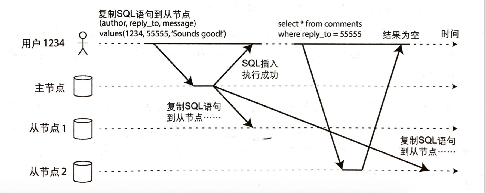
- 该机制要保证用户总能看到自己最近提交的更新。
- 如何实现？
- 如果用户访问可能被修改的内容，则从主节点读；否则从从节点读。
- 针对大部分都会被修改的场景，上述方式会丧失从节点的存在意义。可以考虑跟踪最新的更新时间，对于更新时间在最近一分钟的，从主节点读取。同时需要添加监控。
单调读
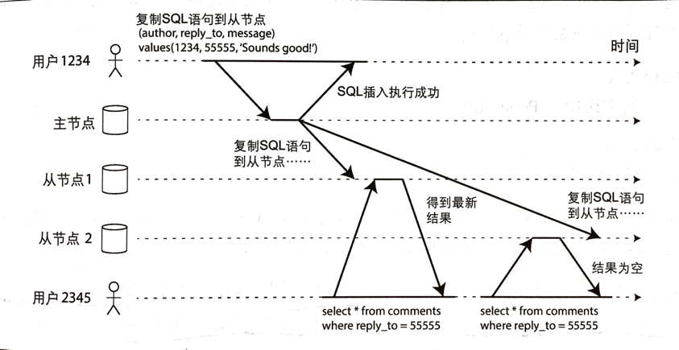
- 用户在读取修改了的数据时，出现「回滚」的现象。也就是明明修改了，并且第一次读的时候看到了新的数据，但是在第二次读取的时候却看到了旧的数据（多节点数据未同步）。
- 单调读要提供的保证就是避免这种奇怪的回滚现象，它比强一致性要弱，但比最终一致性要强。
- 可能的解决方案：可以考虑同一个用户总是从某个固定的副本读取（不同的用户分发到不同的副本）。
前缀一致读
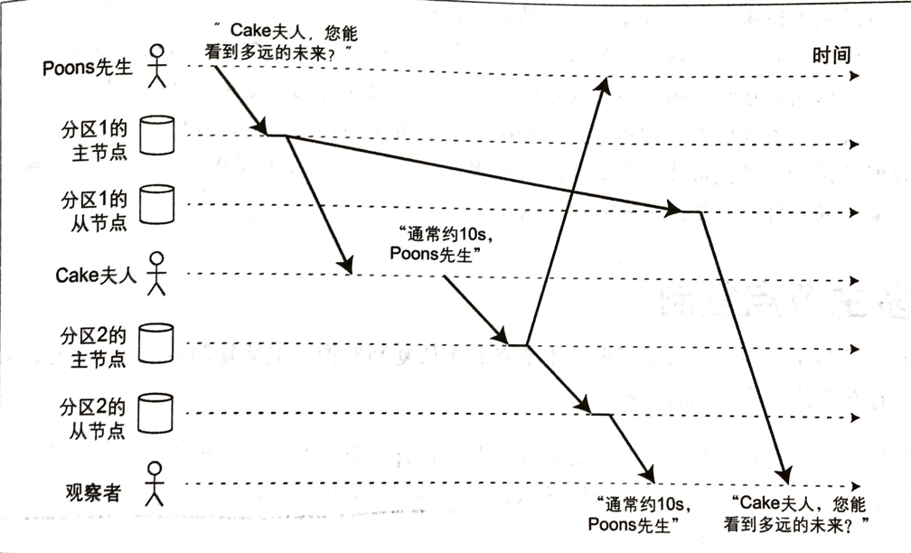
- 该机制要保证对于一系列按照特定顺序的写请求，在读取这些内容时要要遵循同样的顺序。否则可能会看到先有果，再有因的奇怪现象，仿佛遇到了先知。
- 可能的解决方案：确保拥有因果关系的写入都提交给某个特定分区完成，但是实际效率比较低。
多主节点复制
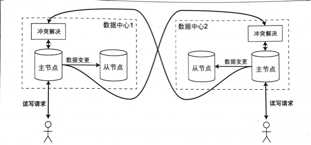
- 主从模式的缺点：系统仅有一个主节点，承载所有的写请求。如果主节点宕机，会影响所有的写入操作。
- 多主节点复制：
- 每个主节点分别接受写请求，并复制（异步 or 同步）给对应的从节点
- 每个主节点扮演其它主节点的从节点
适用场景
- 多数据中心
- 离线客户端操作（典型的例子是 WizNote），每个设备都充当主节点的本地数据库，设备之间采用异步同步方式完成数据同步。同步滞后时间不定。
- 协作编辑
无主节点复制
- 亚马逊的 Dynamo 系统是典型的代表，Riak、Cassandra 也受到了启发。
- 客户端直接将写请求发送给多个副本，或者交给协调者（不保证写入顺序）来发送。
数据一致性保证？
- 读时修复
- 反熵：补偿机制，寻找节点之间的差异，将缺少的数据给补充好。该过程不保证特定顺序的复制写入。
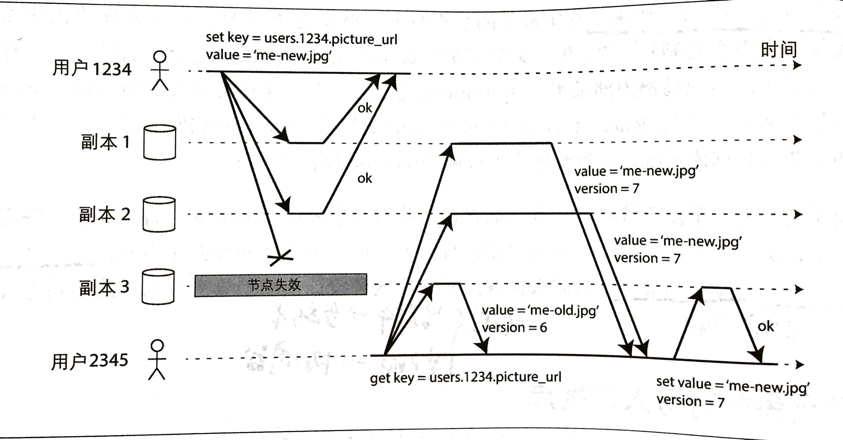
读写 quorum：
- 保证：w + r > n（总节点数）
- 通常 n 为奇数，w = r = (n+1)/2 （向上舍入）
- quorum 不一定非得是多数，读写节点集合中至少有一个是重叠的节点才最为关键！
- 不能保证总能读取到最新值，Dynamo 数据库通常针对最终一致性场景优化的。
- 并发检测（这块还是建议看书中的例子吧）：
- 最后写入者获胜（LWW），丢弃并发写入。可实现最终收敛目标，但是牺牲了数据持久性为代价。
- Happens-before 关系与并发
- 确定前后关系：使用版本号
- 合并同时写入的值
- 版本矢量
数据分区
- 定义：每条数据（或者记录、文档）只属于某个特定分区，每个分区可视为一个完整的小型数据库，是整个数据集的一部分。
为什么要分区？
- 提高系统扩展性：将大的数据集分散到更多的节点，负载均衡
- 提高查询吞吐量：跨分区并发查询
分区和复制通常结合使用，每个分区在多个节点上都有副本，提高系统的容错性：
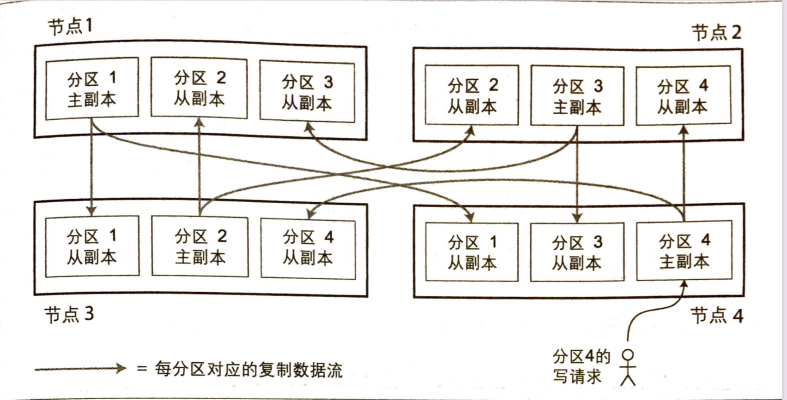
KV 数据分区
分区可能带来的问题：
- 分区不均匀，会造成访问倾斜的问题，甚至可能造成热点
- 可采用随机分配到所有节点避免热点问题，但是查询会很困难（可能需要并发请求所有分区）
基于关键字区间分区：
- 核心是为每个分区分配一段连续的关键字或者关键字区间（以最小值和最大值来表示）
- 关键字区间段不一定要均匀分布
- 支持区间查询方便（有一定顺序）
- 可能会有热点问题（比如按照时间戳范围划分，可能最新的日期读写就很多），可以考虑再添加别的字段来组合决定分区
基于关键字哈希值分区：
- 好的哈希函数可处理数据倾斜，均匀分布
- 丧失良好的区间查询特性
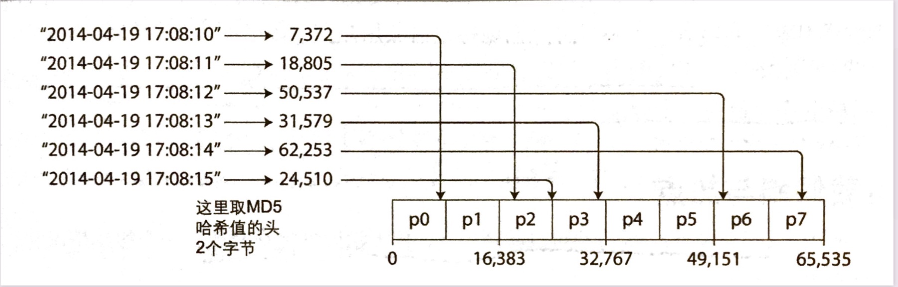
负载倾斜和热点：
- 即便通过哈希值分区的方案，也不能完全避免热点问题。极端情况是，所有的读写都针对同一个关键字（如微博大 V），导致所有请求都到了同一个分区。
- 大多数系统无法自动消除这种高度倾斜的负载，需要应用层介入。
分区和二级索引
- 二级索引的挑战是不能规整地映射到分区中。
基于文档分区的二级索引：
- 每个分区只关注自己的分区的文档，并建立了独立的索引
- 查询时延迟放大严重，需要分散查询并合并结果，代价较高
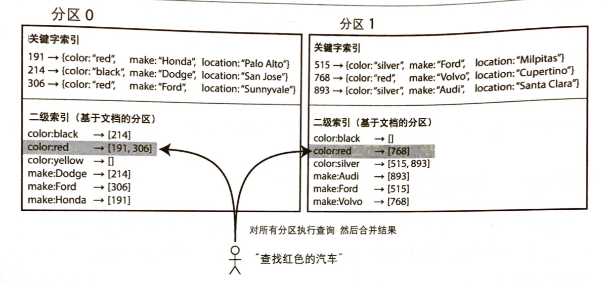
基于词条分区的二级索引：
- 对所有数据构建全局索引；全局索引并非存储在一个节点上（会进行分区），可以和关键字采取不同的分区策略
- 可支持高效地区间查询
- 读取高效，不需要 scatter/gather 模式
- 写入速度慢，且很复杂，会有显著的写放大问题
- 所有现有的数据库都难以支持同步更新二级索引，所以通常都是异步更新
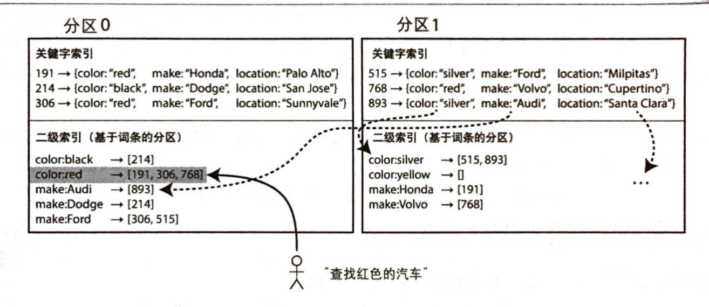
分区再平衡
- 即将数据和请求从一个节点迁移到另一个节点，这种迁移负载的过程被叫作再平衡（动态平衡）
什么情况下需要？
- 查询压力增加，需要增加 CPU 处理负载
- 数据规模增加
- 节点故障
再平衡需要满足的要求：
- 平衡之后，负载、数据存储、读写请求等在集群范围更加均匀分布
- 平衡过程不能影响线上服务
- 避免不必要的负载迁移，尽量减少网络和磁盘 I/O 影响
动态平衡策略
直接取模怎么样？
- 方法比较简单，应用层可根据比如用户 ID 和分区数量取模，得到具体要访问的分区对应的节点
- 扩展或移除节点困难，涉及到大量数据的移动，应用层代码也可能会被波及
固定数量的分区：
- 初始时根据长远规划，设置一个远超实际节点数的分区数（比如 1000），每个节点分配多个分区。每个分区的大小和数据集大小成正比，和节点数无关。
- 新增节点时，从其他节点匀走若干分区，直到再次达到全局平衡；删除节点，则采取相反的措施。
- 需要改变分区和节点的映射关系；但是总的分区数不会变，关键字映射也不会变。
- 对于数据规模高度不确定或者可变的场景不适用。
- Riak, ES, Couchbase 等支持这种动态平衡策略。
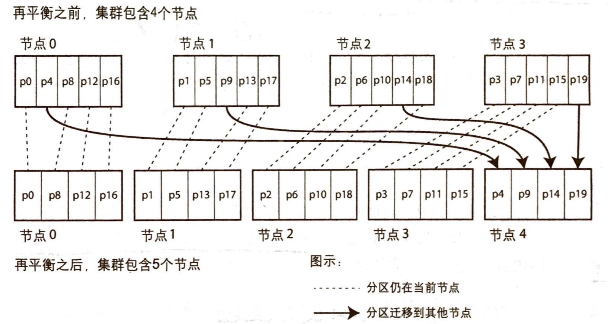
动态分区
- 如 HBase 和 RethinkDB，可以在分区数据增长到某个阈值（HBase 默认阈值为 10GB）自动拆分成两个分区；如果数据被大量删除，且分区缩小到某个阈值，将相邻的分区进行合并。类似 B 树分裂。
- 分区数量自动适配分区总量，少量数据->少量分区->较小的系统开销；每个分区最大值可被限制。分区总数和数据集大小成正比，和节点数无关。
- 预分裂可避免初期先验条件不足，无法确定较适合的边界，导致写入都集中在单个节点处理的问题。HBase 和 MongoDB 都支持配置初始分区。
- 适合关键字区间分区和哈希分区策略。
按节点比例分区：Cassandra 和 Ketama 采用了将分区数和集群节点数成正比关系的方式，每个节点的分区数固定：
- 节点数不变时，分区大小和数据集总量成正比
- 节点数增加时，分区则会变小
- 分区大小保持稳定，可添加更多的节点承载更多的数据
请求路由
典型的服务发现问题，处理策略如下：
- 集群中的节点感知分区情况：允许客户端连接任意节点。如果某个节点恰好拥有请求的分区，则直接处理；否则将请求转发给别的节点，等待答复，并返回给客户端。
- 路由层感知分区情况：所有客户端请求发送至一个路由代理层，由它来做转发。
- 客户端感知分区和节点分配关系：客户端可决定连接到哪个节点，无需中介。
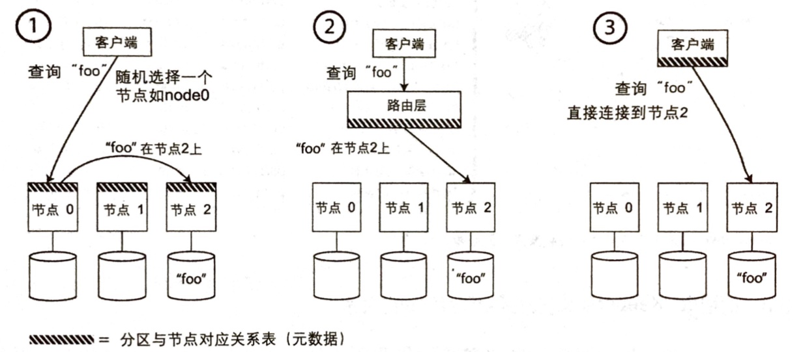
很多分布式系统使用了独立的协调服务（如 ZooKeeper）跟踪集群中的元数据，比如 HBase，Kafka 等。
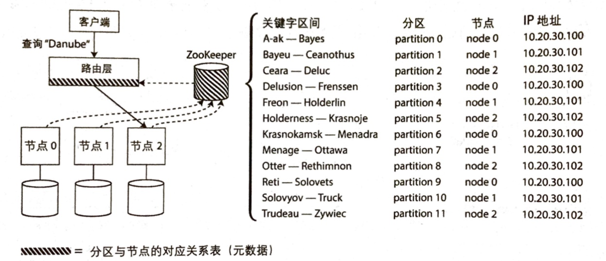另外一种思路是节点之间采用 gossip 协议同步集群状态变化，此时请求可发到任意节点，该节点负责处理或转发。最大的好处是不依赖第三方服务，但是节点复杂性也增加了。典型的代表是 Cassandra 和 Riak，当然还有 Redis Cluster。